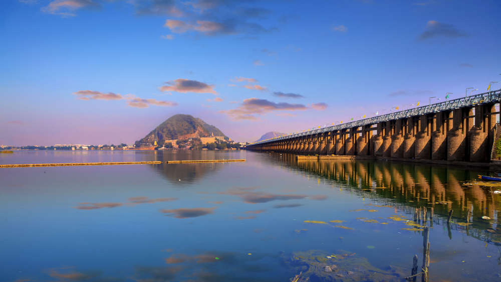
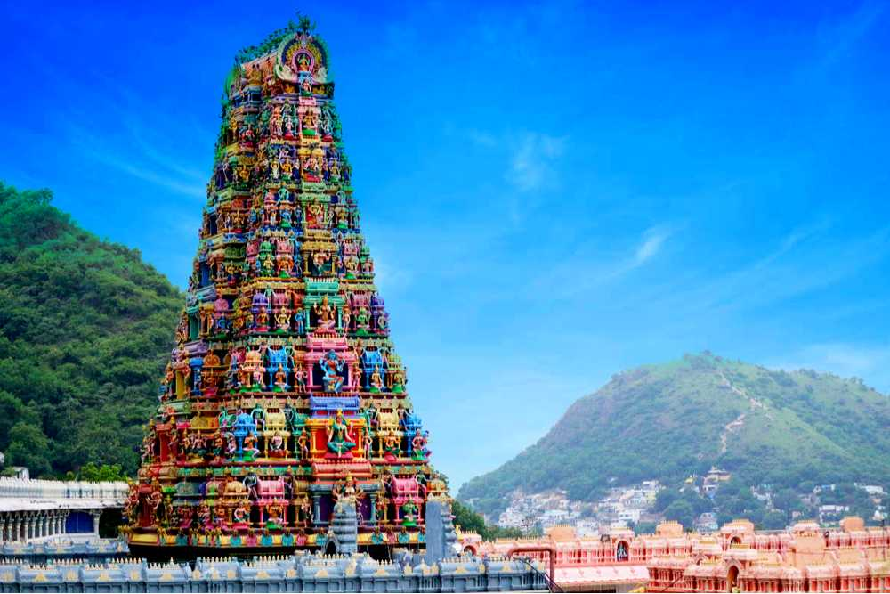

It was constituted on 1 April 1888 and was upgraded to selection grade municipality in 1960, and, to the corporation in 1981. The jurisdictional area of the corporation is spread over an area of 230 km2 (89 sq mi) with 64 wards.[58][59] The present Municipal Commissioner of the city is Sri Swapnil Dinkar Pundkar, IAS[60] and the present Mayor is Rayana Bhagya Lakshmi.[61][62] Vijayawada is the headquarters of Andhra Pradesh Capital Region Development Authority.[63]
As per the G.O. 104 (dated:23-03-2017), the state government had declared Vijayawada Municipal Corporation and its contiguous areas as a metropolitan area of Vijayawada.[64] Its jurisdiction is spread over an area of 230 km2 (89 sq mi) and has an estimated population of 18 lakhs.[65] The metropolitan area covers Vijayawada municipal corporation and merged villages of Ambapuram, Buddavaram, Done Atkuru, Enikepadu, Ganguru, Gannavaram, Gollapudi,[58] Gudavalli, Jakkampudi, Kanuru, Kesarapalle, Nidamanuru, Nunna, Pathapadu, Penamaluru, Phiryadi Nainavaram, Poranki, Prasadampadu, Ramavarappadu, Tadigadapa, Kankipadu, Vuyyuru, Katuru, Bollapadu, Mudunuru and Yanamalakuduru.[66] The urban agglomeration spread in Guntur district covers Tadepalle Municipality and its outgrowth of Undavalli; Mangalagiri Municipality and its outgrowths of Navuluru and Atmakur.[67]
Utility services
Sri Kodanda Ramalaya KalaVedika, Muthyalampadu
Rythubazar, Kedareshwarpeta
Water supply from the 59 water reservoirs, maintenance of roads, sewerage, underground drainage, environment protection programs, recycling of solid waste and producing power are the services provided by the Vijayawada Municipal Corporation.[68] There has been an underground drainage system in the city since 1967–68. Many green parks are maintained by the corporation to protect the environment such as Raghavaiah park, Rajiv Gandhi Park, Dr. B.R Ambedkar Park, Mahatma Gandhi Park etc.[69] The corporation won many awards and achievements such as National Urban Water Award (2009), Siti e-Governance Project, ISO 9001 certification for Quality Management System.[70]
The Andhra Pradesh State Disaster Response and Fire Services Department with its headquarters in the city[71] is responsible for protecting from fire accidents that occur during summers on the hill slope areas of the city.[72]
Pollution control
The report on solid waste generation in 46 metro cities for the year 2015–16 shows Vijayawada produces 550 tonnes of solid waste per day.[73] Vijayawada is one of the cities to be covered under the Solar/Green Cities scheme launched by the Ministry of New and Renewable Energy and is one of the 15 cities in the country listed in Pilot Solar Cities.[74]
In 2007, the Andhra Pradesh State Road Transport Corporation (APSRTC) that operates the city's public transport system introduced less-polluting CNG fuelled public transport busses in a drive to reduce the operational cost and protect the environment.[75] In 2019, with the cost of CNG and fleet maintenance on the rise, the APSRTC had begun replacing the CNG run busses with BS4 and BS6 standard diesel-fuelled buses.[76] However, APSRTC continues to be committed to alternative fuels for its fleet. It has since added more electric,[77] and biodiesel fuelled busses.[78]
Likewise, the city has a large number of CNG fuelled auto-rickshaws that support public transportation needs. However, auto-rickshaw operators have frequently suffered disruption in CNG supply and usually endure long queues to refuel.[79][80] In February 2020, Piaggio Vehicles Private Limited launched the sale of electric auto-rickshaws in the city.[81]
Law and order
Office of assistant commissioner of police, traffic division - III, Vijayawada city
The Vijayawada City Police has its own Police Commissionerate, which is responsible for an area of 1,211.16 km2 (467.63 sq mi),[82] is headed by a Police Commissioner, who is an IPS officer of Additional Director General of Police rank along with one joint commissioner of police and four Deputy Commissioners of Police who are also IPS officers. The present Police commissioner is Bathini Sreenivasulu.[83]
Economy
Main article: Economy of Vijayawada
A view of PVP Mall on M.G. Road
As of 2020 GDP of Vijayawada city is $ 11.292 Billion . [84]Vijayawada is one of the rapidly growing urban markets of the country.[85] The sectors that contribute to the city economy are construction, education, entertainment, food processing, hospitality, registrations, transport, etc.[86] Based on the recommendations of the Sixth Central Pay Commission, it is classified as one of the Y-grade cities of India.[18] According to one study, the GDP of the city in 2010 was $3 billion (Rs. 18,000 crore) and is expected to grow up to $17 billion (Rs. 1,02,000 crore) by 2025.[87] According to another by Oxford the GDP of the city in 2018 was $5.8 billion and is expected to grow up to $21 billion by 2035.[12]
Andhra Cements (1937) was the first cement factory in Andhra Pradesh. Siris Pharmaceuticals was the first pharma company in Andhra Pradesh and was established in 1950.[citation needed]
The city has trading and exporting markets for agriculture and industrial goods.[88] The Nunna Mango Market is one of the largest mango markets in Asia, exporting to major cities in the country.[89] It is also a hub for storage, bottling, and transportation of petroleum products of all major companies like BPCL, HPCL, and IOCL.[90]
The city is also attracting many international IT companies. HCL Technologies, Wipro, the Noida-based Indian multinational is constructing its Vijayawada campus in Kesarapalli village, near to Gannavaram. In the first phase, HCL will provide employment to 5,000 students.[91]
There are two major IT parks one at Gannavaram and other in Mangalagiri there are big companies like TechMahindra, HCL, PI Data Center, VSoft, Efftronics, KJ Systems, and EPSoft. The city is also most preferred tier-two city destination for IT/ITES services. There is an APIIC Mega Food Park in Mallavalli near Gannavaram.
The growing population and economy have resulted in rising real estate prices.[92] There is also a cyber security office that is operating by Tech mahindra.And the Wonderla an amusement park is trying to invest around 250 crores rupees to expand its branch in between guntur and vijayawada in 50 acres.
The city corporation organises "Happy Sunday," an event organised on the first Sunday of every month at M.G. Road for promoting activities such as sports, games, cultural events, and yoga.[102] The clothing of the locals includes traditional men wearing dhoti and women wearing saree and salwar kameez. western clothing is also predominant.[103]
Arts, crafts and artifacts
The Vijayawada Art Society promotes Telugu arts.[104] The city hosted Poetic Prism 2015, a multilingual poet's meet on 19 September 2015.[96] All these activities are organised in collaboration with the Cultural Centre of Vijayawada.
Kondapalli Toys — which were granted geographical indication in 2007[105] — are handmade by the artisans of Kondapalli,a suburb of Vijayawada.[106] Kondapalli toys, also known as Kondapalli Bommalu, are traditional wooden toys crafted by skilled artisans in Kondapalli, Andhra Pradesh, India. These toys are known for their intricate designs and vibrant colors, made from soft Tella Poniki wood and painted with natural dyes. They are safe for children to play with due to their non-toxic materials and lack of harmful chemicals. Originating from Rajasthan in the 16th century, Kondapalli artisans are considered 'Aryakhastriyas'.[107]
Victoria Jubilee Museum is an archaeological museum in the city, which houses sculptures, paintings, and artefacts of Buddhist and Hindu relics, dating back to the second and third centuries.